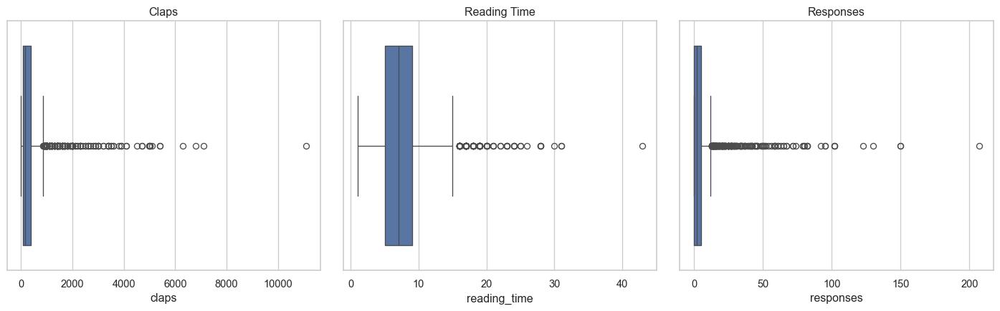

import pandas as pd
import matplotlib.pyplot as plt
import seaborn as sns
sns.set(style="whitegrid")
df = pd.read_csv("data/medium_data.csv")About This Project
I created this project to explore what drives engagement on Medium — using public data and hands-on Python analysis.
I analyzed ~1,800 Medium articles to uncover patterns in claps, reading time, and responses. This page walks through the full process, including: • Cleaning and transforming the data • Generating summary statistics and visualizations • Extracting insights useful for content planning
All visuals and analysis are now fully integrated below using Python and Quarto — no external dashboards required.
Tools & Skills
Python(Pandas, Matplotlib, Seaborn) for data cleaning and analysis
Quartoto publish analysis
Data storytelling— summarizing patterns into insights
Strategic thinkingfrom a content manager’s view
Dataset
- Source: Kaggle - Medium Articles Dataset
Contains metadata for ~1,800 Medium articles: title, claps, responses, reading time, publication, date
Key Findings
- The Startup dominates top clapped articles — strong brand power
- Best-performing articles tend to be 6–9 minutes
- Most articles receive <5 responses, with a few outliers
- Engagement peaks in early Q1, suggesting seasonal behavior
Why I Did This
This project simulates a real-world editorial question:
“What types of stories perform best on Medium, and how can writers use data to plan better content?”
By combining public data, Python, and lightweight reporting tools, I aimed to show how a modern content strategist might use data.
Analysis Summary (Python)
To start the analysis, I loaded the dataset and imported key libraries used for data wrangling and visualization:
The data includes article metadata such as publication, reading time, claps, and responses. Next, I cleaned and prepared the dataset for analysis.
Data Cleaning
Before analyzing the data, I cleaned and prepared it by:
- Parsing the publication date
- Filtering out articles with zero claps
- Calculating a new feature: claps per minute of reading time
df['date'] = pd.to_datetime(df['date'], dayfirst=True)
df = df[df['claps'] > 0].copy()
df['claps_per_min'] = df['claps'] / df['reading_time']Descriptive Stats
df[['claps', 'reading_time', 'responses']].describe()| claps | reading_time | responses | |
|---|---|---|---|
| count | 2420.000000 | 2420.000000 | 2420.000000 |
| mean | 367.808678 | 7.495041 | 5.722727 |
| std | 679.184481 | 3.703285 | 12.958243 |
| min | 1.000000 | 1.000000 | 0.000000 |
| 25% | 62.000000 | 5.000000 | 0.000000 |
| 50% | 155.000000 | 7.000000 | 2.000000 |
| 75% | 382.250000 | 9.000000 | 5.000000 |
| max | 11100.000000 | 43.000000 | 207.000000 |
Visualizing Distributions
To understand the general spread and outliers in the dataset, I visualized the distributions of claps, reading time, and responses using boxplots. This helped surface skewed engagement patterns and typical article behavior.
plt.figure(figsize=(15, 5))
# Claps
plt.subplot(1, 3, 1)
sns.boxplot(x=df['claps'])
plt.title('Claps')
# Reading Time
plt.subplot(1, 3, 2)
sns.boxplot(x=df['reading_time'])
plt.title('Reading Time')
# Responses
plt.subplot(1, 3, 3)
sns.boxplot(x=df['responses'])
plt.title('Responses')
plt.tight_layout(pad=2)
plt.show()
Boxplots show that:
- Claps are heavily right-skewed with a few viral outliers
- Reading time is typically 5–10 minutes
- Responses are sparse, with most articles receiving very few